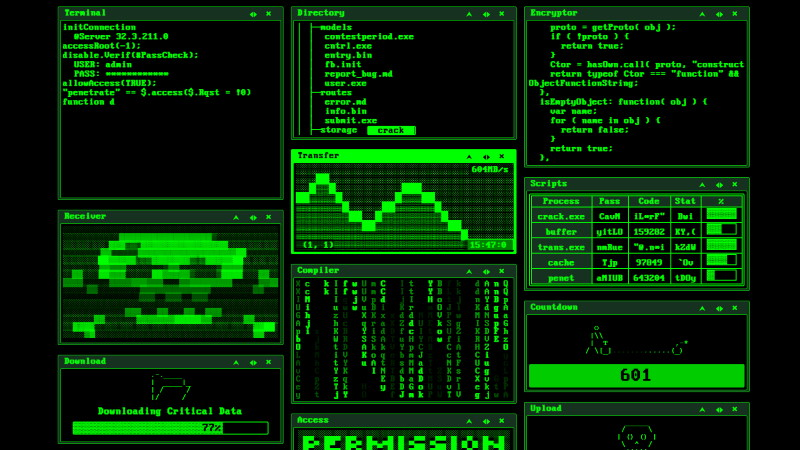

Cooperation
Media Cooperation
هيئة الاعلام
الصفحة الرئيسية: النشر والاعلام
حالة المنتدى : نشط
ادارة الهيئة: انقر هنا
Communication Cooperation
هيئة التواصل
الصفحة الرئيسية: التواصل الاجتماعي
حالة المنتدى : نشط
ادارة الهيئة: انقر هنا
Development Cooperation

هيئة التطوير
الصفحة الرئيسية: البرمجة والاختراق
حالة المنتدى : نشط
ادارة الهيئة: انقر هنا